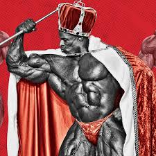
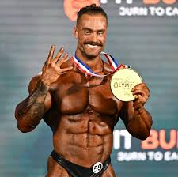

Arnold Schwarzenegger es sin duda uno de los íconos más grandes del mundo del fitness.
Es conocido por su impresionante carrera en el culturismo,
donde ganó el prestigioso título de Mr. Olympia siete veces.
Su dominio en el deporte durante los años 70 ayudó a popularizar el culturismo y
a establecer nuevos estándares para futuras generaciones de culturistas.

Ronnie Coleman es considerado uno de los mejores culturistas de todos los tiempos. Es conocido como "El Rey"
y ha ganado el título de Mr. Olympia ocho veces consecutivas (1998-2005), igualando el récord de Lee Haney.
Su impresionante físico, combinando tamaño y definición, lo ha hecho famoso en el mundo del fitness.

Chris Bumstead, también conocido como CBum, es uno de los culturistas
más populares y exitosos de la actualidad.
Nacido el 2 de febrero de 1995 en Ottawa, Ontario, Canadá,
ha ganado el título de Mr. Olympia Classic Physique seis veces consecutivas desde 2019 hasta 2024.
Su impresionante físico y dedicación al culturismo lo han convertido en una figura
influyente en el mundo del fitness.